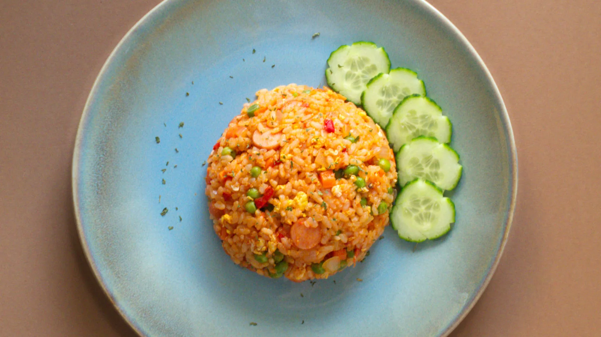

Nasi Tomato

Tomato fried rice has a rich and sweet flavour mainly from fresh tomatoes and ketchup.
Ingredients
- 4 cawan beras
- Bahan untuk dipotong halus
- 3 cm halia*
- bawang merah*
- bawang putih*
- 6 cawan air
- 3 tangkai bunga cengkih
- 3 kuntum Bunga lawang
- 5 biji buah pelaga
- 2 batang kulit kayu manis
- 1 helai daun pandan
- 1/2 cawan kismis
- 1/2 cawan susu cair
- 2 cawan tomato sup
- 1 senduk minyak sapi
Recipe instructions
- Potong halus bahan bertanda "*" untuk ditumis
- Panaskan minya sapi, masukkan bahan yang dipotong halus bersama bunga lawang, bunga cengkih, daun pandan, buah pelaga dan kayu manis. Goreng sehingga kekuningan dan naik bau.
- Masukkan beras kacau seketika selama 1-2 minit. Kemudian Masukkan air dan masak sehingga mendidih.
- Masukkan tomato sup, susu cair, kismis dan garam secukup rasa. Apabila hampir kering pertahankan api, tutup tudung periuk dan tunggu hingga masak.